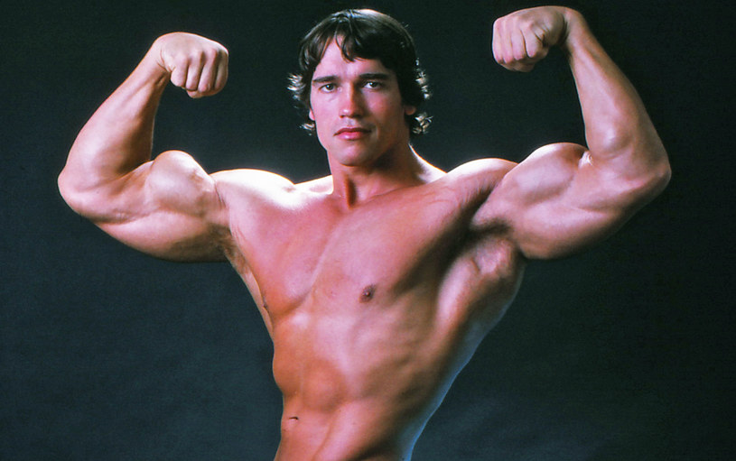
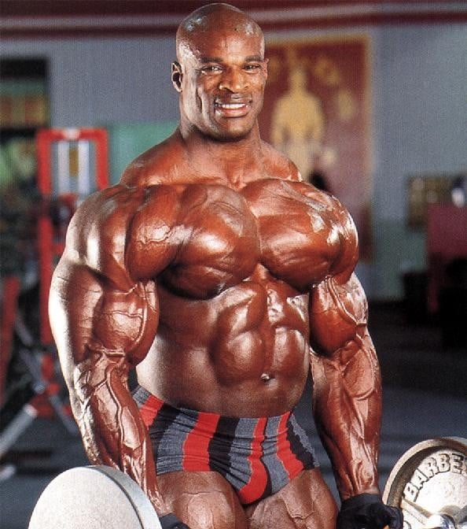
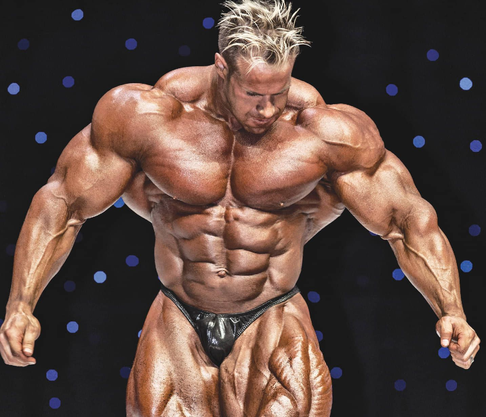
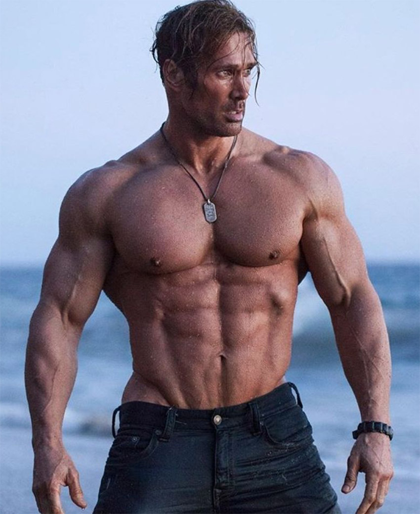

Czym jest Kulturystyka?
Kulturystyka to dyscyplina sportowa, która skupia się na rozwijaniu masy mięśniowej i kształtowaniu sylwetki poprzez regularny trening siłowy oraz dbanie o właściwe odżywianie. Choć kulturystyka zwykle kojarzy się z wyczynowym uprawianiem sportu, wiele osób podejmuje tę aktywność również dla celów estetycznych i zdrowotnych.
Podstawowym celem kulturystyki jest osiągnięcie maksymalnej masy mięśniowej przy jednoczesnym minimalizowaniu ilości tkanki tłuszczowej. Aby to osiągnąć, kulturyści stosują różnego rodzaju ćwiczenia siłowe, takie jak przysiady, martwy ciąg czy wyciskanie sztangi, oraz dbają o odpowiednią dietę, w której uwzględniają odpowiednią ilość białka i węglowodanów.
W kulturystyce istnieją różne kategorie wagowe oraz kategorie wiekowe, a zawodnicy oceniani są podczas zawodów pod względem masy mięśniowej, symetrii, rzeźby mięśni oraz ogólnego wyglądu sylwetki. Wielu kulturystów osiąga znaczące sukcesy w zawodach na poziomie krajowym i międzynarodowym, stając się wzorem do naśladowania dla wielu osób uprawiających kulturystykę dla celów rekreacyjnych.
Co to jest Mr. Olympia?
Mr. Olympia to prestiżowa nagroda przyznawana najlepszemu zawodnikowi kulturystyki na świecie. Konkurs ten organizowany jest corocznie przez Międzynarodową Federację Kulturystyki i Fitnessu (IFBB) i jest jednym z najważniejszych wydarzeń w świecie kulturystyki.
Pierwszy konkurs Mr. Olympia odbył się w 1965 roku, a od tamtej pory stał się on jednym z najbardziej prestiżowych i wyczekiwanych konkursów w branży kulturystycznej. W ramach zawodów kulturyści rywalizują ze sobą w różnych kategoriach wagowych, a zwycięzca otrzymuje tytuł "Mr. Olympia" oraz nagrodę finansową.
Zwycięstwo w konkursie Mr. Olympia to dla kulturystyki to samo, co wygrana w Super Bowl dla futbolu amerykańskiego czy zwycięstwo w Mistrzostwach Świata dla innych dyscyplin sportowych. Wielu zwycięzców Mr. Olympia, takich jak Arnold Schwarzenegger, Ronnie Coleman czy Jay Cutler, zyskało status legend w świecie kulturystyki i stało się inspiracją dla kolejnych pokoleń kulturystów.
Konkurs Mr. Olympia przyciąga rokrocznie rzesze fanów kulturystyki z całego świata, którzy chcą zobaczyć największe gwiazdy tej dyscypliny na żywo. Wydarzenie to stanowi również ważną platformę dla firm z branży fitness, które prezentują swoje produkty i usługi.
Znani kulturyści
| Kulturyści | ilość tytułów Mr. Olympia | lata kariery |
|---|---|---|
| Arnold Schwarzenegger | 7 razy | 1970–1975, 1980 |
| Ronnie Coleman | 8 razy | 1990–2005 |
| Jay Cutler | 4 razy | 2000-2010 |
| Mike O’Hearn | 0 razy | 1973-do teraz |
Najbardziej wyróżniający się ze z całego zestawienia, z pewnośćia jest Ronnie Coleman, słynący ze swojego kultowego juz filmu "light weights" oraz z krzyczenia "yeah buddy". Również Arnold Schwarzenegger zasłynął z swoich ogromnych bicepsów jak i Mike O’Hearn, który ostatnich czasów był popularnym viralem na tiktoku.
Galeria
|

Arnold Schwarzenegger |

Ronnie Coleman |
|

Jay Cutle |

Mike O’Hearn |